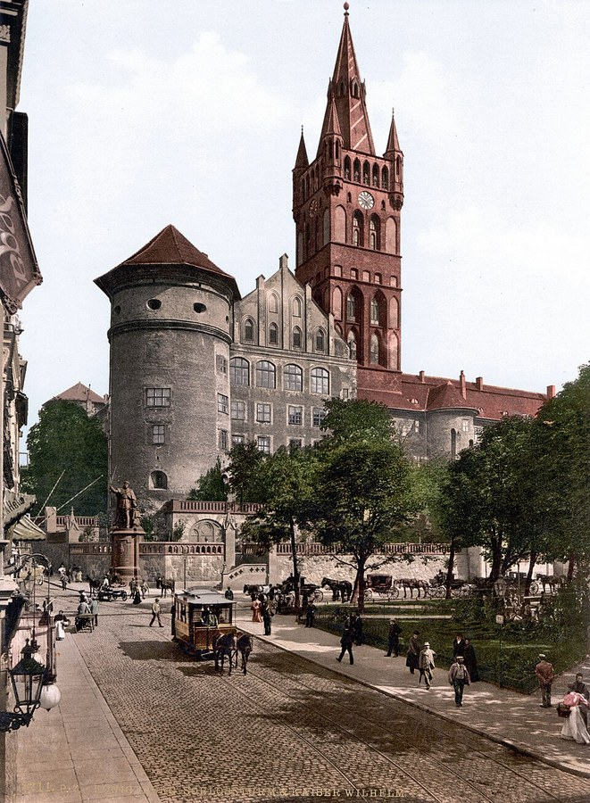

Königsberg (Karaliaučius)¶
In the 1380s [Historical record]¶
Königsberg (Lith. Karaliaučius; Pol. Królewiec) was founded in 1255 on the Pregel and was the seat of the Order’s Marshal, who led the Reisen into Lithuania. It was three towns, Altstadt, Löbenicht and the Kneiphof, with the brick castle on the old hill; the cathedral on the Kneiphof was building from the 1330s and completed c. 1380. It was the mustering point for western crusader-guests: English, French, German and Bohemian knights joined the summer and winter Reise here (Henry Bolingbroke in 1390).
Key events: the Treaty of Königsberg, 30 January 1384, in which Vytautas ceded Samogitia up to the Nevėžis and became the Order’s vassal (the Treaty of Lyck confirmed it in 1390). Vytautas’s wife Ona and children were kept here as sureties (1383-84), and after the treaty moved to Marienburg. His second flight to the Order in 1389 and, in later tradition (Simon Grunau, 16th century; en.wikipedia calls it a false rumour), the poisoning of two young sons in July 1392 are tied to Königsberg, but the record is thin. After Salynas (1398) the Order took Samogitian elders’ sons as hostages; the saga sends them to Königsberg. Sources: VLE; en.wikipedia (Treaty of Königsberg, Treaty of Lyck).
Königsberg (Karaliaučius)

Königsberg (Karaliaučius) · place — Image: Unknown author, Public domain via Wikimedia Commons¶

Type |
place |
Note |
Crusader stronghold on the Pregel estuary; staging post for winter reisen. |
Sensory sketch¶
A river port in the Prussian lowlands: boats at the Pregel quays, timber stacked high, hemp and tar, herring, amber, wax and furs in the warehouses, brick churches over timber lanes. In summer, banners, tents and horses before the Reise, English and French voices, drinking songs, the Order’s Mass at dawn. In winter, heavy snow on the castle gates, ice on the river, and the dull sound of sleighs. The air is damp and salty; the lagoon fog rolls up the Pregel.
In the saga¶
The Iron Saint’s barracks. Heraldry, drinking and pious brutality; the saga’s Table of Honour for the best crusader guests. Here Vytautas meets the western knighthood, and here the treaty that sells Samogitia is sealed in the January cold; the “Amber Debt” is signed into the record. Ona’s wing of the castle is a polite prison. Book III shows its other face: forty-one Samogitian children learning “a civilised language” in the same town.
Getting there¶
From Tapiau, 38 km east along the Pregel (a day on horse, or a boat downstream from Tapiau in about a day). From Marienburg about 165 km straight, c. 200 km by road (five to six days). From Kaunas it is 220 km straight: 6-8 days on horse overland across the Wildnis (about 250 km), or 300-320 km by water (Nemunas, lagoon, Deime, Pregel), six to nine days downstream, two to four weeks upstream. From Vilnius 410 km straight, on the Order’s own road to the capital.
Scenes set here¶
Book I ch. 19 Velnio sandėris (Ona’s lodging in the castle wing), ch. 22 (the treaty recalled); Book II ch. 6 (the treaty renewed), ch. 7 (captives to be taken here); Book III ch. 1, 4, 6, 8, 12 (the child-hostages); Book VI ch. 14 Kniprodės tvarka (1353-60), ch. 17, ch. 21 (a baptism in July).
Relations
Events here: Treaty of Königsberg (Samogitia ceded) · Vytautas flees to the Order again · Vytautas’s hostage sons poisoned (Grunau tradition, contested) — Place uncertain.
Timeline¶
Year |
Event |
Book |
|---|---|---|
1384-01-30 |
I · The Wolf’s Exile |
|
1389 |
II · The Golden Shadow |
|
1392-07 |
Vytautas’s hostage sons poisoned (Grunau tradition, contested) |
II · The Golden Shadow |
Connections¶
graph LR
ev_konigsberg["Treaty of Königsberg (Samogitia ceded)"]
ev_second_defection["Vytautas flees to the Order again"]
ev_sons_poisoned["Vytautas's hostage sons poisoned (Grunau tradition, contested)"]
konigsberg["Königsberg (Karaliaučius)"]
ev_konigsberg -->|Location| konigsberg
ev_second_defection -->|Location| konigsberg
ev_sons_poisoned -->|Location| konigsberg
style konigsberg stroke-width:3px